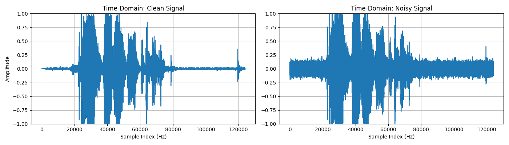

Overview
High-frequency noise in audio recordings reduces clarity and can interfere with speech recognition, scientific measurement, and general listening quality. This project simulates that problem: a clean audio sample is loaded, artificial Gaussian noise is added to it, and a discrete-time LTI low-pass filter is then applied to recover a cleaner version of the signal.
The results are visualized in both the time-domain and frequency-domain, with side-by-side comparisons at each stage — clean vs noisy, and clean vs filtered. The audio used for testing was a short recording of my own voice.

Problem Definition
The system models a noisy input signal as the sum of a clean audio signal and additive high-frequency noise. A moving-average filter is then applied via discrete convolution to attenuate the noise.
x[n] = s[n] + n[n] (noisy input)
h[n] = 1/N, n = 0, 1, ..., N-1 (filter impulse response)
y[n] = x[n] * h[n] (filtered output via convolution)
N is the filter length — it controls how many samples are averaged together. A larger N means stronger high-frequency attenuation but more smoothing of the original signal. The noise amplitude parameter controls how loud the added static is before filtering.
Implementation
Loading and preprocessing.
The audio file is read into a NumPy array using soundfile. Since
some recordings are stereo, the script checks the number of dimensions and
averages both channels down to mono if needed, ensuring the signal is always 1D
before processing.
signal_clean, sample_rate = sf.read(audio_file)
# convert stereo to mono if needed
if signal_clean.ndim == 2:
signal_clean = signal_clean.mean(axis=1)
Adding noise.
Gaussian noise is generated with np.random.randn and scaled by a
noise amplitude constant. The noisy signal is clipped to the valid
range of [-1, 1] to prevent distortion when saving as a .wav file.
noise_amp = 0.05 noise = noise_amp * np.random.randn(len(signal_clean)) signal_noisy = signal_clean + noise signal_noisy = np.clip(signal_noisy, -1.0, 1.0)
Applying the filter.
The moving-average filter is constructed as an impulse response array of length
N, then applied to the noisy signal via np.convolve with
mode='same' to preserve the original signal length.
N = 5 h = np.ones(N) / N # impulse response: h[n] = 1/N signal_filtered = np.convolve(signal_noisy, h, mode='same') signal_filtered = np.clip(signal_filtered, -1.0, 1.0)
Frequency-domain analysis.
FFTs are computed for the clean, noisy, and filtered signals using
np.fft.fft. Magnitudes are converted to decibels for plotting —
the linear scale made the clean and noisy spectra look nearly identical, so the
logarithmic scale was necessary to reveal the actual differences.
fft_clean = np.fft.fft(signal_clean) fft_noisy = np.fft.fft(signal_noisy) fft_filtered = np.fft.fft(signal_filtered) freqs = np.fft.fftfreq(len(signal_noisy), 1 / sample_rate) # plot magnitude in dB (log scale) 20 * np.log10(np.abs(fft_noisy)[:len(freqs)//2] + 1e-12)
Results
Time-domain — clean vs noisy. The noisy signal retains the same overall waveform shape as the clean signal, but shows a noticeably increased amplitude spread across all samples due to the added Gaussian noise.

Time-domain — clean vs filtered. After filtering, the amplitude spread is significantly reduced compared to the noisy signal, though it does not fully return to the clean signal's amplitude — a trade-off of the moving-average approach.

Frequency-domain — clean vs noisy. On a logarithmic scale, the noisy signal shows a larger spread of magnitudes compared to the clean signal, and that elevated noise floor persists across higher frequencies.

Frequency-domain — clean vs filtered. The filtered signal's magnitude range closely matches the clean signal, but introduces a new phenomenon: periodic nulls in the spectrum caused by the zeros of the moving-average filter's frequency response. These produce a sinusoidal ripple pattern across the spectrum — a known characteristic of this filter type.

What I Learned
The most interesting result was the spectral nulls introduced by the moving-average filter. Going in, I expected cleaner output to simply mean a flatter, lower noise floor — seeing the periodic cancellation pattern in the frequency domain made the theoretical behavior of FIR filter zeros concrete in a way that reading about it hadn't.
I also learned that the linear frequency-domain plots were essentially useless for this analysis — the differences only became visible after switching to a logarithmic (dB) scale. That was a practical lesson in choosing the right representation for the data you're trying to inspect.
If I extended this project, I'd experiment with a proper windowed FIR filter (e.g. a Hamming-windowed sinc) to get a sharper frequency cutoff without the spectral nulls, and add a parameter sweep to visualize how filter length N affects the trade-off between noise reduction and signal preservation.